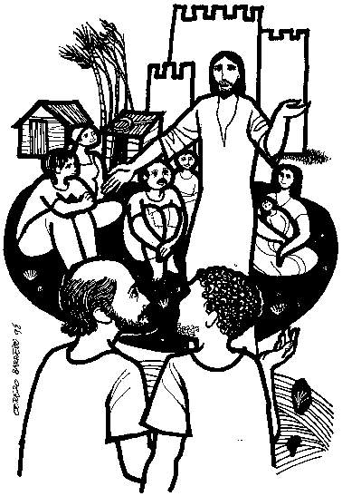
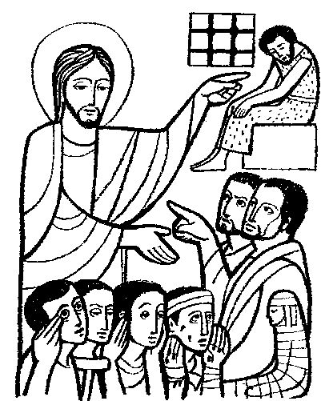

This Week: Isaiah 35:1-10, ,Psalm 146:5-10 or Luke 1:47-55, James 5:7-10, Matthew 11:2-11
Elementary School Pew-work
Two words -- “God” and “me” -- can fill in ALL the blanks below: choose the right one for each blank!
I am glad because of ______ my Savior. He cares for ______, his humble servant. From now on, all people will say ______ has blessed ______. ______ All-Powerful has done great things for ______, and his name is holy. He always shows mercy to everyone who worships him. The Lord has used his powerful arm to scatter those who are proud. He drags strong rulers from their thrones and puts humble people in places of power. ______ gives the hungry good things to eat, and sends the rich away with nothing. He helps his servant Israel and is always merciful to his people. The Lord made this promise to our ancestors, to Abraham and his family forever!
How will
future generations remember
Mary?
__________________________________________________________________________
What has God
done for the
hungry?
__________________________________________________________________________
Which of God's
promises does Mary
recall?
__________________________________________________________________________
 
Next week: Isaiah 7:10-16,Psalm 80:1-7, 17-19 Romans 1:1-7, Matthew 1:18-25
This Week: Isaiah 35:1-10, ,Psalm 146:5-10 or Luke 1:47-55, James 5:7-10, Matthew 11:2-11
Middle-School Pew-work
|
My soul doth magnify the Lord : and my spirit hath rejoiced in God my Saviour. For he hath regarded : the lowliness of his handmaiden. For behold, from henceforth : all generations shall call me blessed. For he that is mighty hath magnified me : and holy is his Name. |
And his mercy is on them that fear him : throughout all generations. He hath showed strength with his arm : he hath scattered the proud in the imagination of their hearts. He hath put down the mighty from their seat : and hath exalted the humble and meek. |
He hath filled the hungry with good things : and the rich he hath sent empty away. He remembering his mercy hath holpen his servant Israel : as he promised to our forefathers, Abraham and his seed, for ever. |
If
Jesus were to come back today, what do you think he would be like?
________________________________________________________________________
________________________________________________________________________
________________________________________________________________________
________________________________________________________________________
________________________________________________________________________
|
|
Across 1. look! 5. undeserved good 6. father of Isaac 9. the creator 11. made great 12. who saves us 13. looked upon 14. sacred Down 2. humility 3. from now on 4. woman-servant 7. gentle and quiet 8. lifted up 10. innermost self Created by Puzzlemaker at DiscoveryEducation.com |
Next week: Isaiah 7:10-16,Psalm 80:1-7, 17-19 Romans 1:1-7, Matthew 1:18-25